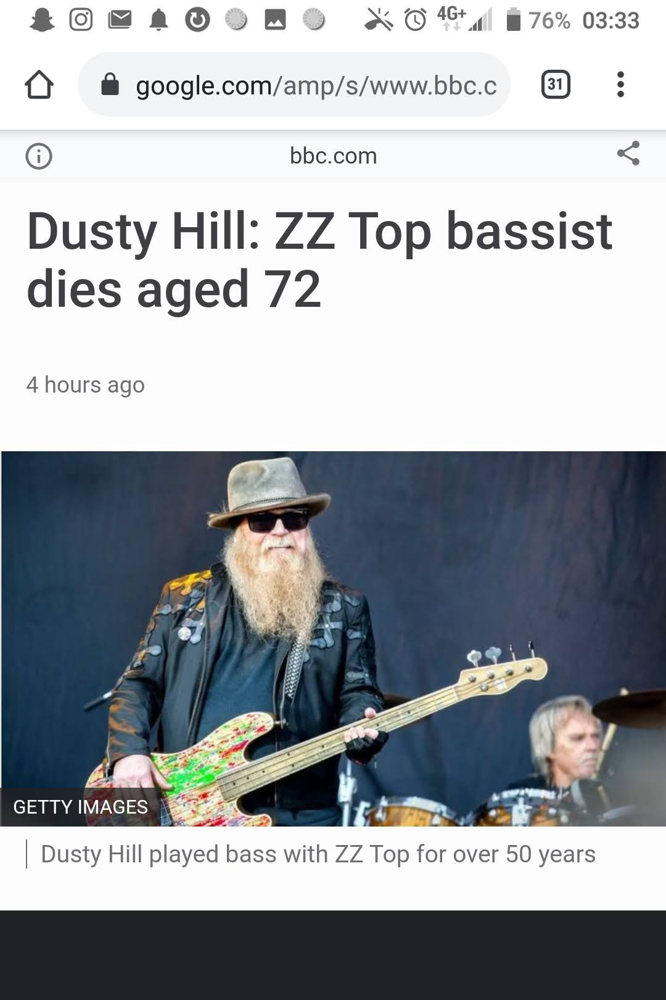

Sharp Dressed Man
The most peculiar thing just happened. Extremely sad but peculiar nonetheless.
Earlier today as I was leaving my apartment in Amsterdam, I played ZZ Top’s “Sharp Dressed Man”
on Spotify — indeed, it is the last song I searched for.
For those who don’t know, they’re that rock band with the two dudes with insanely long bushy
beards.
 My Spotify search history — Sharp Dressed Man being the last song I searched for.
My Spotify search history — Sharp Dressed Man being the last song I searched for.
Well that was a few hours ago, around 7 pm on Wednesday. I can’t say why but that song has been
stuck at the back of my mind as of late. Just a few minutes ago, I lay in bed — restless and
sleepless — and decided to browse Reddit on my phone.
The first result on the frontpage? A random fact about none other than ZZ Top. Not paying too
much heed to it in the moment, I scrolled down, but not long before I remembered the connection.
How curious…I had only just listened to them a few hours ago. I clicked on the link.
 Screenshot of the Reddit Post.
Screenshot of the Reddit Post.
What I find in the comments, is something that motivated me to exit my bed and pick up my
journal.
Dusty Hill, their brilliantly bushy bearded bassist — and one of their vocalist’s— had died just
a few hours ago.
How eerie is that?
It eradicated all remnants of the thought of sleep within me.
Something comes to mind.
A concept about time.
You might be familiar with the analogy of time and ripples. Gravitational waves are in fact,
ripples in space-time. Einstein first predicted that they existed, but thought of them as
undetectable. Indeed, they are invisible, and travel at the speed of light (186,000 miles per
second).
The first search result for “time ripples” on Google — I do concede that
businessinsider.com may not be the best scientific source.
Now we know for certain, that time, or specific moments in time, definitely have an
effect on the future. Dusky Hill is no more. We can think of his death as a moment
in time with the effect of this event being his absence in our continued existing
reality.
But what if his death reverberated backward in time like the tiny waves that circumvent a stone
when you skip it in a lake?
Somehow, something drew me to that particular energy a few hours ago. Let me start off by saying
that I am by no means a huge ZZ Top fan. Don’t get me wrong, they have my utmost respect and
admiration for their longevity and contribution to music — but I am not too familiar with their
work.
However, today I decided to blast Sharp Dressed Man on my headphones for the first time in
months. And in between the time that I played the song and opened Reddit — it’s composer had
died.
Dusky Hill is no more, ending 50 years with his band and the 72 of his life on this Earth.
Rest in Peace.
Now naturally this could be explained as a coincidence, but it was odd enough for me to record
here.
Could certain events be so powerful they cause shockwaves that literally reverberate backward in
time? Or not just backward, or forward, but in all directions like the aforementioned stone in
the lake?
Perhaps our linear concept of time is relevant for us in regard to functionality and common
sense, but limited in capacities we don’t know.
Imagine time as a lake or ocean, and a single stone or pebble — symbolizing an event, such as a
death or a birth — were cast out into this body of water. Wouldn’t we see ripples in every
direction around the stone?
A stone in an ocean.
This could be and probably is an incorrect simplification about time — and I'm certain that some
friends of mine will tell me that this isn’t how time works, but the writer in me was awoken at
2:59 AM on Thursday the 29th of July so bear with me.
Gravitational waves — or coincidence?
Energy — or a sign of the conscious nature of our universe and existence?
I guess it depends on how you word it.
They don’t necessarily have to be mutually exclusive.
Either way, listen to Sharp Dressed Man — or any other ZZ Top song today in honor of Dusky — rock
just lost a pillar.
— Arsalan Ali Aga
Thursday the 29th of July, 2021 | 3:54AM

The original BBC article I came across (notice the time stamps). Between the time I played the song and saw the Reddit post, its’ singer died